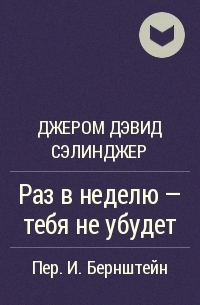

1944 — Раз в неделю — тебя не убудет (Once a Week Won’t Kill You)

Он укладывал чемодан, не выпуская сигареты изо рта, и щурился, когда дым
попадал в глаза, так что по его выражению нельзя было сказать, скучно ему,
или страшно, или горько, или уже все равно. На лицо красивой молодой
женщины, сидящей, как гостья, в глубоком темном кресле, упад луч утреннего
света - но красота ее от этого не пострадала. Хотя всего красивее были, по-
. жалуй, ее голые руки: загорелые, округлые и прекрасные.
- Миленький, - говорила она, - почему все это не мог сделать Билли, я
просто не понимаю. Нет, правда.
- Что? - спросил молодой человек. У него был сипловатый голос заядлого
курильщика.
- Я не понимаю, почему этого не мог сделать Билли.
- Он старый. Может, включишь радио? В это время дают неплохие записи.
Попробуй на волне тысяча десять.
Молодая женщина потянулась назад той рукой, на которой у нее было
золотое обручальное кольцо, а рядом на мизинце - невероятный изумруд;
отодвинула белую, заслонку, что-то нажала, что-то повернула. И стала ждать,
откинувшись на спинку кресла, но вдруг, ни с того ни с сего, зевнула.
Молодой человек на минуту поднял на нее глаза.
- Нет, правда. Надо же им было назначить отправление на такое ужасно
неудобное время, - сказала она.
- Я передам, - ответил молодой человек, перебирая стопку носовых
платков, - что моя жена находит такое время отправления неудобным.
- Миленький, я правда буду по тебе ужасно скучать.
- И я тоже. У меня где-то должны быть еще белые носовые платки.
- Нет, правда. Просто возмутительно. Честное слово.
- Ну, ладно. Все, - молодой человек закрыл чемодан. Он закурил новую
сигарету, посмотрел на кровать и лег поверх одеяла... [89]
И как раз когда он растянулся на кровати, лампы в приемнике разогрелись
и в комнату хлынули победные трубные звуки - марш Сузы для необъятного
духового оркестра. Его жена отвела за спину одну роскошную обнаженную руку и
выключила радио.
- Я думал, передадут что-нибудь другое.
- Ну, не в такую безумную рань.
Молодой человек пустил к потолку кособокое дымное колечко.
- Тебе не обязательно было вставать, - сказал он ей.
- Но я сама хотела! - за три года она не отучилась разговаривать
восклицаниями. - Не встать! Разве можно?
- Подкрути на пятьсот семьдесят, - сказал он. - Может, там есть
что-нибудь.
Его жена снова включила радио, и они оба стали ждать, он-с закрытыми
глазами. Через минуту послышался какой-то вполне надежный джаз.
- Нет, правда, у тебя разве есть столько время, чтобы лежать?
-Столько времени. Да. Еще рано.
Его жене вдруг пришла в голову серьезная мысль.
- Я надеюсь, ты попадешь в кавалеры и получишь крест. Ты ведь так
любишь ездить верхом! Ты непременно должен быть кавалером. Нет, правда.
- Кавалеристом, - поправил молодой человек с закрытыми глазами. - Вряд
ли. Сейчас всех берут в пехоту.
- Вот ужас, миленький! Ну почему ты не хочешь позвонить тому человеку,
знаешь, у него еще на лице такая штука? Полковнику. Мы с ним на той неделе
были вместе у Фила и Кении. Из разведки, помнишь? Нет, правда, ты ведь
знаешь французский и даже немецкий, и все такое. Во всяком случае, он бы
тебе устроил производство в офицеры. Ты подумай, как тебе тяжело будет
служить, ну, этим, рядовым! Ты ведь даже разговаривать с людьми не любишь.
Честное слово.
- Пожалуйста, - сказал он, - не надо об этом. Я тебе все уже объяснял.
Насчет производства в офицеры.
- Ну, по крайней мере, я надеюсь, что тебя отправят в Лондон. Нет,
правда, там хоть есть культурные люди. У тебя записан номер полевой почты
Бабби?
- Да, - солгал он.
У его жены возникла еще одна важная мысль.
- Мне бы какой-нибудь английский отрез. Твид, может быть, или еще там
что-нибудь.
Но тут же она вдруг снова зевнула и сказала то, что ей не нужно было
говорить: [90]
- Ты попрощался с тетей?
Ее муж открыл глаза и довольно резко сел, одним махом опустив ноги на
пол.
- Вирджиния. Послушай. Я вчера не успел все сказать. Я хочу, чтобы ты
раз в неделю водила ее в кино.
-В кино?
- Тебя не убудет, - сказал он. - Один раз в неделю - это не смертельно.
- Ну конечно, миленький, но...
- Без но, - сказал он. - Раз в неделю, тебя не убудет.
- Ну конечно же, глупый! Я только хотела сказать...
- От тебя не так много требуется. Она уже не молода, и вообще, сама
знаешь.
- Но, миленький, ведь ей опять стало хуже. Нет, правда. Она такая...
чокнутая, даже не смешно. Честное слово, ведь ты же не сидишь с ней дома
целые дни.
- Ты тоже не сидишь, - сказал он. - А она вообще не выходит, если я ее
куда-нибудь не поведу, не вытащу. - Он наклонился к самому ее лицу и едва не
упал с кровати. - Вирджиния, всего раз в неделю. Тебя не убудет. Я не шучу.
- Ну конечно же, миленький! Нет, правда, раз ты этого хочешь...
Молодой человек вдруг встал.
- Скажи, пожалуйста, на кухне, что можно подавать завтрак, - попросил
он, направляясь к двери.
- Эй, служивенький, может, поцелуешь меня? - остановила его жена.
Он пригнулся, поцеловал ее дивный рот и вышел из комнаты.
Он поднялся на один пролет по широкой, покрытой толстым ковром лестнице
и, на площадке повернув влево, дважды постучался во вторые двери. К створке
была приколота карточка старого нью-йоркского отеля "Уолдорф-Астория" с
типографской надписью: "Просьба не беспокоить" и припиской сбоку -
выцветшими чернилами: "Ушла подписываться на Заем Свободы. Скоро буду.
Встреть вместо меня Тома - в шесть в вестибюле. Он вздергивает левое плечо
выше правого и курит прелестную короткую трубочку. Целую. Я." Записка
предназначалась матери молодого человека, в первый раз он прочел ее, когда
был еще маленьким, и с тех пор перечитывал раз сто. Перечитал он ее и
теперь, в марте 1944 года.
- Войдите! - раздался деловитый голос. Молодой человек вошел. [91]
У окна за ломберным столиком сидела очень красивая дама лет пятидесяти
с лишним в изящном кремовом пеньюаре и очень грязных белых спортивных
тапочках.
- Ну-с, Дикки Кэмсон, - сказала она. - Что это ты поднялся в такую
рань, лентяй ты этакий?
- Так, дела кое-какие, - ответил молодой человек, улыбаясь с
облегчением. Он поцеловал ее в щеку и, держа одну руку на спинке ее кресла,
скользнул взглядом по большому альбому в кожаном переплете, который был
открыт перед нею.
- Как поживает коллекция?
- Чудесно. Просто чудесно. Этот альбом - ты его даже не видел еще,
бессовестный ты мальчик, - я только что начала. Билли и кухарка будут
отдавать мне все, что получают, и ты тоже мог бы сохранять для меня свои.
- Обыкновенные гашеные американские марки по два цента? Здорово
придумано! - Он обвел взглядом комнату. - А как работает приемник?
Приемник был настроен на ту же станцию, что и у него внизу.
- Чудесно. Я сегодня утром делала гимнастику.
- Послушай, тетя Рена, я ведь тебя просил не делать больше эту дурацкую
гимнастику. Честное слово, тебе же не под силу. Ну какой в этом смысл?
- Мне нравится, - твердо ответила его тетка и перевернула страницу
альбома. - Мне нравится музыка, под которую ее надо делать. Все старые
мотивы... И уж конечно было бы нечестно слушать музыку и не делать
упражнения.
- Вполне честно, уверяю тебя. Ну, пожалуйста, не надо. Чуть поменьше
принципиальности, - сказал молодой человек. Он походил немного по комнате,
потом понуро уселся на подоконник. Внизу был парк, и он глядел туда, словно
высматривал между деревьями путь, которым лучше подойти к сообщению о своем
отъезде. Он-то мечтал, что вот будет хоть одна женщина в 1944 году, у
которой перед глазами не сыплются песочные часы чьей-то жизни. А теперь ему
приходится и перед нею поставить такие часы - свои. Его подарок женщине в
грязных спортивных тапочках. Женщине, собирающей гашеные двухцентовые
американские марки. Женщине, которая была сестрой его матери и писала ей
записки на карточках "Уолдорф-Астории"... Обязательно ли ей говорить?
Обязательно ли ставить перед нею эта его дурацкие, быстро иссякающие
блестящие песочные часы?
- Ты становишься в точности похож на свою мать, когда делаешь вот так
лоб. Да. Совершенно как она. Ты ее хоть немного помнишь, Ричард? [92]
- Да. - Он задумался. - Она никогда не ходила просто. Всегда бегом, и
вдруг, с разбега, в какой-нибудь комнате остановится. И еще она насвистывала
сквозь зубы, когда задергивала занавески у меня в комнате. Почта всегда один
и тот же мотав. Я его помнил, пока был маленький, а вырос и забыл. Потом
уже, в колледже, у меня был сосед по комнате из Мемфиса, он однажды заводил
старые пластинки - Бесси Смит, Тигардена, - и там одна песня чуть меня не
убила: та самая, что любила насвистывать мама. Я сразу узнал. Называется,
оказалось: "Не могу быть паинькой в воскресенье, раз я всю неделю
сорви-голова". Но под конец семестра один тип, Альтриеви была его фамилия,
наступил на нее пьяный, я с тех пор так ее больше и не слышал. - Он примолк.
- А другого я ничего не помню. Одна только чушь какая-то.
- А как она выглядела, помнишь?
-Нет.
- О, она была чудо как хороша, - тетя подперла подбородок худой изящной
рукой. - Твой отец на месте усидеть не мог, когда мама выходила из комнаты.
Кивал, как дурачок, если к нему обращались, а сам не сводил своих маленьких
глазок с двери, за которой она скрылась. Странный он был человек и
довольно-таки нелюбезный. Ничем не интересовался, только бы ему делать
деньги да смотреть на твою мать. Да еще катать ее на этой своей жуткой яхте,
которую он вздумал купить. У него была такая смешная английская матросская
шапочка, от отца, он говорил, ему досталась. Мама всегда старалась ее
спрятать, когда они собирались кататься.
- И это было все, что тогда нашли, да? - сказал молодой человек. - Эту
шапочку.
Но глаза тетки уже упали на раскрытый альбом.
- Нет, ты только посмотри, что за прелесть! - воскликнула она, поднимая
к свету одну из своих марок. - У него такое волевое лицо с перебитой
переносицей, у Вашингтона.
Молодой человек встал и отвернулся от окна.
- Вирджиния сказала на кухне, чтобы подавали завтрак,
Мне пора идти вниз, - проговорил он, но вместо того чтобы уходить,
подсел к ломберному столику рядом с ней. - Тетя
Рена, - сказал он, - послушай меня минутку.
Она подняла к нему умное, внимательное лицо.
- Тетя... э-э-э... понимаешь, сейчас война. Я... ты ведь
видела киножурналы, верно? Ну, и там, по радио слышала...
- Разумеется.
- Ну и вот, я иду на войну. Я должен. Уезжаю сегодня,
сейчас. [93]
- Я так и знала, что ты должен будешь ехать, - сказала тетя, просто,
без паники, без горестных восклицаний: "Последний!" Замечательная женщина,
подумал он. Самая умная, нормальная женщина на свете.
Молодой человек встал, оставляя перед нею свои песочные часы словно бы
невзначай - единственный верный путь.
- Вирджиния будет часто навещать тебя, детка, - сказал он ей. - И
водить тебя в кино. В "Саттоне" на той неделе пойдет старая картина Филдса.
Ты ведь любишь его фильмы.
Тетка тоже поднялась, но пошла не к нему, а мимо.
- У меня есть для тебя рекомендательное письмо, - деловито сказала она
на ходу. - К одному моему близкому другу.
Она подошла к письменному столу, не раздумывая, выдвинула левый верхний
ящик и вынула белый конверт. Потом вернулась к столику, где лежал ее альбом
с марками, а конверт сунула в руку племяннику.
- Оно не запечатано, - сказала она. - Можешь прочесть, если захочешь.
Молодой человек рассмотрел белый конверт. Он был адресован некоему
лейтенанту Томасу Э. Кливу-младшему. Почерк - тетин, волевой и четкий.
- Том - замечательный юноша, - сказала она. - Служит в Шестьдесят
девятой дивизии. Он за тобой присмотрит, я совершенно спокойна. - И добавила
многозначительно: - Я еще два года назад знала, что так, будет, и сразу же
подумала про Томми. Он отнесется к тебе исключительно участливо. - Она снова
обернулась, на этот раз немного растерянно, и уже не такой решительной
походкой возвратилась к письменному столу. Выдвинула еще какой-то ящик,
вынула большую застекленную фотографию молодого человека в лейтенантской
форме образца 1917 года, с высоким стоячим воротником.
Неверными шагами подошла к племяннику и протянула ему фотографию.
- Вот его портрет, - пояснила она. - Вот портрет Тома Клива.
- Мне уже пора, тетя, - сказал молодой человек. - До свидания. У тебя
ни в чем не будет нужды. Ни в чем, увидишь. Я напишу тебе.
- До свидания, мой милый, милый мальчик, - сказала тетка и поцеловала
его. - Смотри, непременно разыщи Тома Клива. Он за тобой присмотрит, пока ты
устроишься и все такое. [94]
- Да, да. До свидания.
- До свидания, дитя мое, - рассеянно повторила его тетка.
- До свидания.
Он вышел за дверь и, едва держась на ногах, спустился по лестнице. На
нижней площадке он вынул из кармана конверт и разорвал его пополам, потом
еще пополам, и еще пополам. И не зная, что делать с комком бумажек, сунул в
карман брюк.
- Миленький. Завтрак совершенно остылЯичница твоя, и вообще все.
- Ты вполне можешь водить ее раз в неделю в кино, - сказал он. - Тебя
не убудет.
- А я разве что говорю? Разве я отказываюсь?
-Нет.
И он прошел к столу.
НАВЕРХ